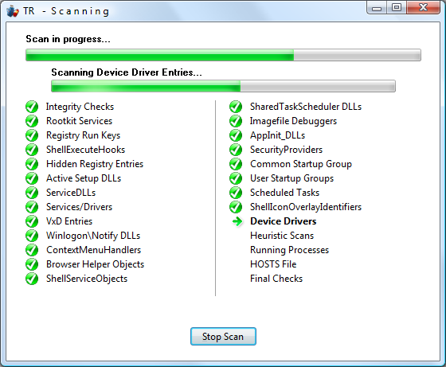
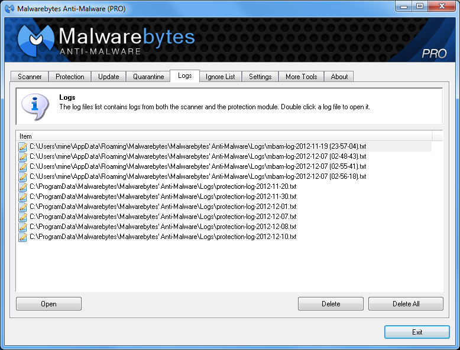
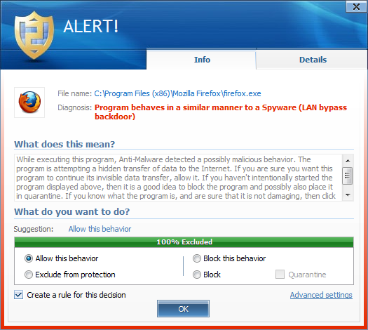
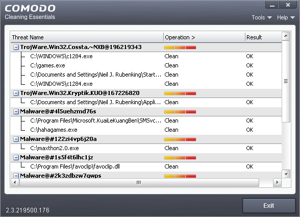

Un antivirus non è sempre sufficiente per proteggere il proprio computer da attacchi di questo tipo. Nonostante implementino sofisticati sistemi euristici, infatti, può capitare che trojan horse recentemente sviluppati sfuggano al controllo dei software antivirus, lasciando il nostro sistema esposto a rischi. È necessario, quindi, scaricare dei programmi (chiamati in gergo trojan remover) che ci permettano di scovare ed eliminare questi malware. Se vistate chiedendo come eliminare i trojan, di seguito riportiamo alcuni software utilissimi in questa operazione.

Per il più celebre programma anti trojan non poteva esistere nome migliore (tradotto, colui che rimuove i trojan). Questa piccola applicazione sviluppata da Simply Super Software non elimina solo trojan, ma anche adware, worms e spyware. Dopo averlo installato e lanciato, effettua una scansione completa dell’hard disk del computer su cui è montato: analizza tutti i file del sistema, i file di registro di Windows, i programmi e i file caricati allo startup dal sistema operativo. Trojan remover verifica se Windows lancia dei servizi dietro i quali possono nascondersi dei backdoor o trojan.
Malwarebytes' Anti-Malware (MBAM)

Appena lanciato, questo programma fa partire una scansione completa del proprio disco rigido alla ricerca di trojan horse e di altre tipologie di malware. Dispone di un ottimo motore e di un ricchissimo database per una ricerca comparata. Sebbene l’interfaccia grafica lasci un po’ a desiderare, recupera per intuitività e facilità d’utilizzo: anche l’utente meno avvezzo ai linguaggi e alle tecnologie informatiche è in grado di utilizzarlo. Unica pecca della versione gratuita è la mancanza di aggiornamenti costanti, disponibili invece per la versione a pagamento del software.

Non solo trojan. Pur essendo davvero molto efficiente sotto questo punto di vista, il programma di Emisoft è in grado di trovare ed eliminare spyware, adware, tracking cookie, worm, virus e rootkit. È in grado, inoltre, di riconoscere trojan contenenti keylogger e dialer, garantendo una protezione pressoché completa con un solo programma. Il software unisce in un’unica soluzione il motore di scansione di BitDifender Antivirus e il database di malware di Emisoft, per un prodotto molto potente ed efficiente. Nel caso in cui troviate dei file “misteriosi”, potete sempre inviarli a Emisoft per un’analisi più accurata.

Comodo di nome e di fatto. È un programma portabile e non va quindi installato sul computer da controllare. Basta cliccare due volte sull’eseguibile per farlo partire (ossia sul file con estensione .exe). Dotato sia di un motore euristico che di uno signature based (ovvero che effettua un controllo dei file sulla base di alcune caratteristiche standard dei file virali), non rileva solamente trojan ma anche altre tipologie di malware. Con Comodo possono essere eseguite tre diverse tipologie di scansione: SMART (va a controllare solamente alcune aree critiche della memoria, solitamente più inclini a essere infettate da trojan), full (completa) e custom (personalizzata). Anche se è un po’ esigente sotto il punto di vista delle risorse di sistema (nel corso della scansione potrete notare un aumento delle temperature del processore, ma nulla di eccessivo), è dotato di un’interfaccia grafica pulita e lineare, che permette anche agli utenti meno avvezzi all’informatica di utilizzarlo con estrema facilità. Nel corso della scansione, ogni file trovato può essere cancellato o messo in quarantena, segnalato a Comodo come un falso positivo (un file sicuro, ancorché riconosciuto come virus) oppure si può semplicemente ignorare la segnalazione.